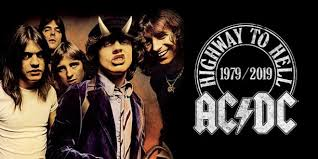
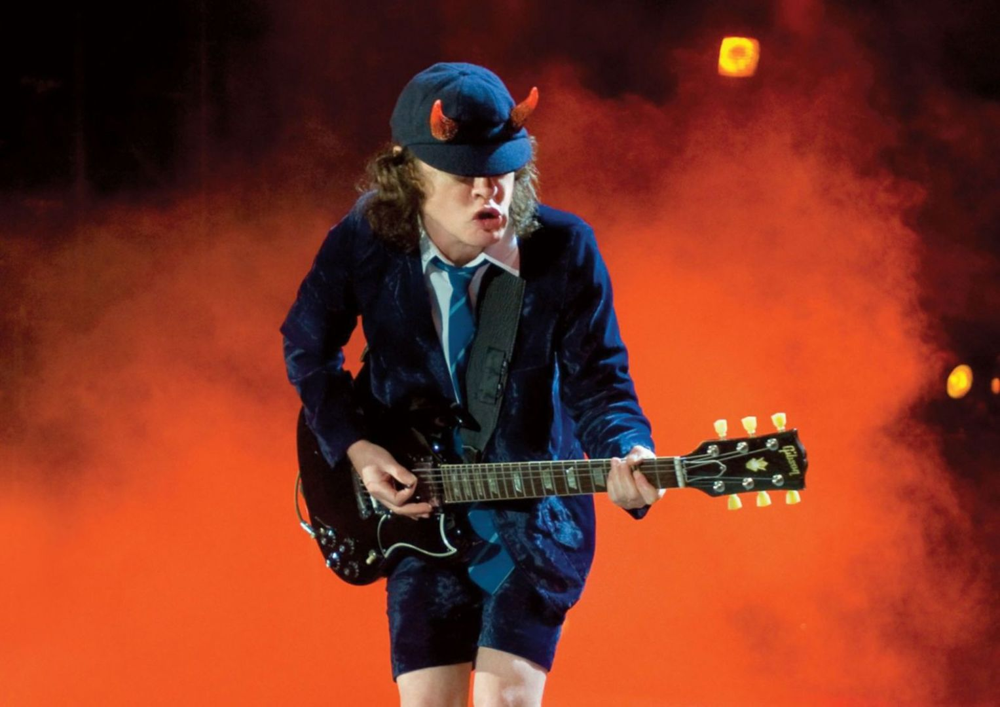
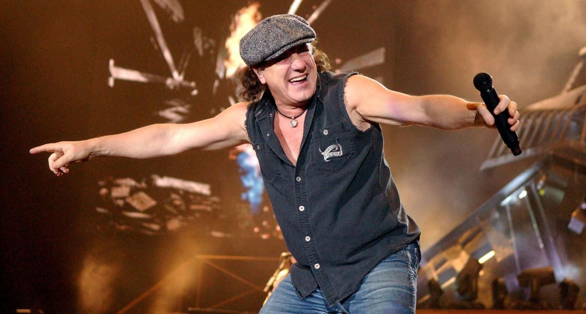
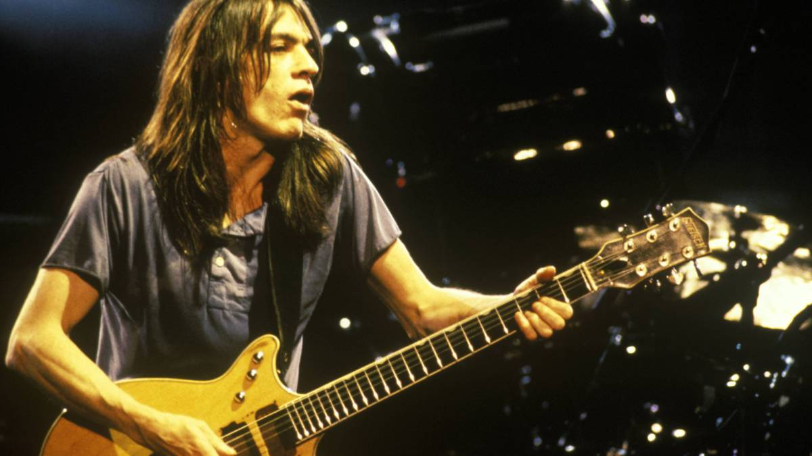
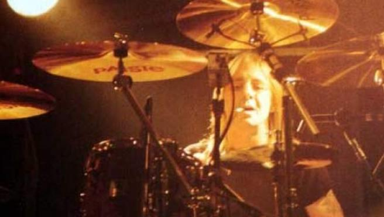

Conoce a los componentes de nuestro grupo
Angus Young, Brian Jonhson, Malcolm Young y Phill Rudd

Angus Young: el guitarrista más conocido

Angus es un músico escocés, conocido por vestir con uniforme de instituto en sus conciertos.
Es el único miembro que permaneció en la banda desde su inicio.
Brian Jonhson: el vocalista con una voz única

Brian es conocido por estar en el número 39 de los 100 mejores vocalistas del metal de todos los tiempos
Reemplazó a Bon Scott.
Malcolm Young: corista y guitarrista

Conocido por ser fundador, guitarista, corita y miembro letrista.
Phill Rudd: el batería

Considerado el baterista original de la banda.